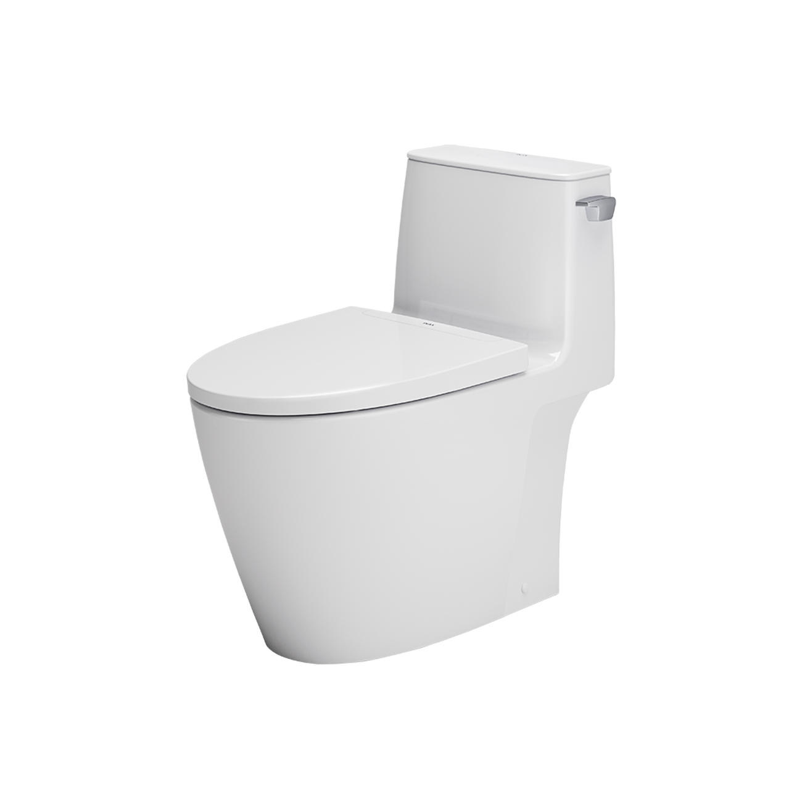
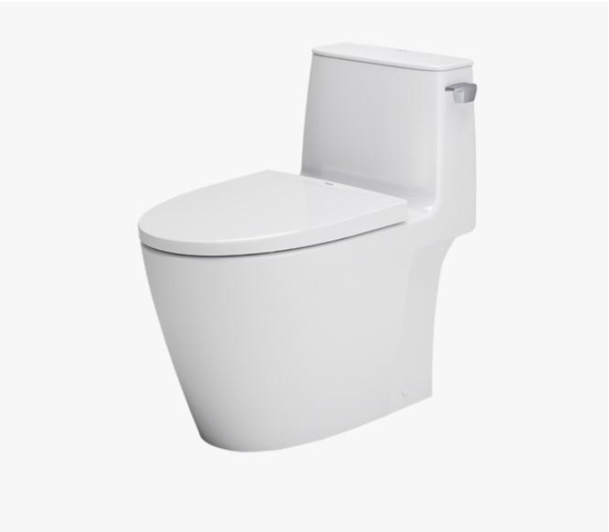
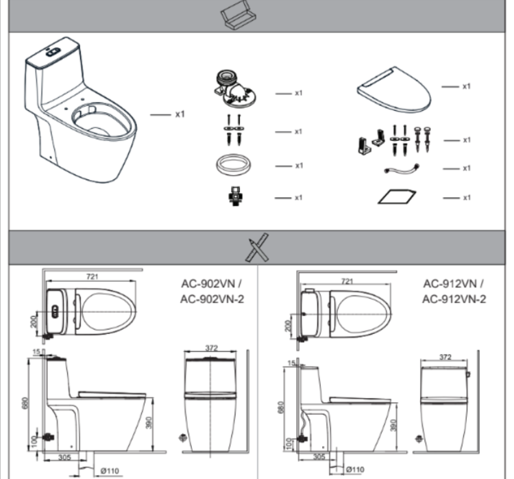
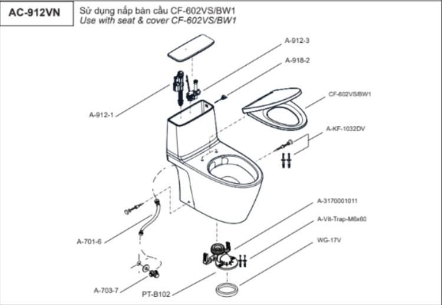

Bồn cầu 1 khối INAX AC-912VN sở hữu thiết kế liền khối gọn gàng, đường nét bo tròn mềm mại và màu trắng tinh tế, dễ dàng hài hòa với nhiều không gian phòng tắm khác nhau. Sản phẩm ứng dụng men sứ Aqua Ceramic chống bám bẩn cùng công nghệ xả Powerful Vortex mạnh mẽ, mang lại trải nghiệm tiện nghi, bền đẹp và dễ vệ sinh.Thiết kế bồn cầu 1 khối AC-912VNKiểu dáng liền khối gọn gàng, két nước và bệ ngồi được thiết kế liền mạch tạo sự chắc chắn và hiện đại.Đường nét bo tròn mềm mại, mang lại cảm giác hài hòa và thanh thoát cho tổng thể sản phẩm.Phong cách thiết kếbồn cầu tối giản, phù hợp với nhiều phong cách nội thất phòng tắm khác nhau.Màu trắng tinh tế, giúp không gian phòng tắm thêm sáng sủa và dễ dàng kết hợp cùng các thiết bị vệ sinh khác.Kích thước 721 x 372 x 680 (mm) cân đối, phù hợp với cả phòng tắm vừa và nhỏ.Tính năng nổi bật của bồn cầu 1 khối AC-912VNNắp CF-602VS đóng êm: Hạn chế tối đa tiếng ồn khi đóng mở, mang lại sự tiện nghi và thoải mái trong quá trình sử dụng.Vành rim trơn láng: Giúp giảm thiểu tình trạng bám bẩn, dễ dàng lau chùi, giữ cho sản phẩm luôn sạch sẽ.Hệ thống xả tay gạt tiết kiệm nước: Mức xả 4.5L kết hợp hệ thống gạt tay, đảm bảo khả năng làm sạch hiệu quả và tiết kiệm nước tối ưu.Thiết kế tiện lợi và bền bỉ: Hướng đến trải nghiệm thoải mái, đáp ứng nhu cầu sử dụng lâu dài trong gia đình.Bề mặt men sứ Aqua Ceramic: Bề mặt sứ được phủ lớp men Aqua Ceramic giúp duy trì độ sáng bóng lâu dài, hạn chế tình trạng ố vàng và bám cặn theo thời gian.Công nghệ xả Powerful Vortex (xả xoáy kép): Hệ thống Powerful Vortex được thiết kế với hai cửa xả mạnh mẽ, tạo dòng nước xoáy cuốn trôi mọi chất bẩn một cách nhanh chóng.Video giới thiệu công nghệ Aqua Ceramic độc quyền của INAXĐể tạo nên một không gian phòng tắm hiện đại và đồng bộ, bồn cầu 1 khối AC-912VN có thể kết hợp hài hòa với các mẫu chậu rửa INAX như chậu rửa bán âm AL-345V. Sự tương đồng về chất liệu sứ cao cấp, màu trắng tinh tế cùng phong cách thiết kế tối giản giúp tổng thể phòng tắm trở nên sang trọng, thống nhất và tiện nghi hơn.Bản vẽ bồn cầu 1 khối AC-912VNBản vẽ lắp đặt AC-912VNHướng dẫn lắp đặt bồn cầu 1 khối AC-912VNXem file Hướng dẫn cách lắp đặt bồn cầu AC-912VNHướng dẫn sử dụng nắp bồn cầu CF-602VSThông số kỹ thuậtChất liệuSứKiểu dángBồn cầu 2 khốiKích thước721 x 398 x 741 (mm)Tính năng & Công nghệ- Hai mức xả 4.5L/3.0L (xả đại/xả tiểu) siêu tiết kiệm nước - Hệ thống xả Powerful Vortex với hai cửa xả mạnh mẽ, loại bỏ mọi chất bẩn. - Nắp đóng êm, thiết kế tối ưu cho cảm giác thoải mái. - Vành rim trơn láng, dễ vệ sinh và hạn chế bám bẩn. - Men sứ Aqua Ceramic giúp bề mặt sáng bóng, chống bám cặn và bám bẩn, dễ vệ sinh.Thương hiệuINAXThiết kế- Nắp ngồi êm ái, được nghiên cứu tối ưu cho trải nghiệm người dùng. - Thân bồn bo tròn mềm mại, liền mạch, dễ vệ sinh. - Vành rim hoàn toàn trơn láng, hạn chế bám bẩn. - Kiểu dáng hiện đại, thanh thoát, phối hợp dễ dàng với nhiều phong cách nội thất phòng tắm. - Két nước và bệ ngồi tách rời, thuận tiện cho lắp đặt, bảo trì và vận chuyển.Màu sắcTrắngKhác- Có thể kết hợp với các mẫu chậu rửa đặt bàn: INAX AL-312V, L-312V và AL-345V. - Hotline tư vấn: 18006633
Bồn cầu 1 khối AC-912VN
Bàn cầu thương hiệu INAX.
Đã cập nhật danh sách yêu thích.
DANH MỤC: Bàn cầu
MÃ SẢN PHẨM: AC-912VN
DEPTH: 372mm
HEIGHT: 680mm
WIDTH: 721mm
Bồn cầu 1 khối INAX AC-912VN sở hữu thiết kế liền khối gọn gàng, đường nét bo tròn mềm mại và màu trắng tinh tế, dễ dàng hài hòa với nhiều không gian phòng tắm khác nhau. Sản phẩm ứng dụng men sứ Aqua Ceramic chống bám bẩn cùng công nghệ xả Powerful Vortex mạnh mẽ, mang lại trải nghiệm tiện nghi, bền đẹp và dễ vệ sinh.Thiết kế bồn cầu 1 khối AC-912VNKiểu dáng liền khối gọn gàng, két nước và bệ ngồi được thiết kế liền mạch tạo sự chắc chắn và hiện đại.Đường nét bo tròn mềm mại, mang lại cảm giác hài hòa và thanh thoát cho tổng thể sản phẩm.Phong cách thiết kếbồn cầu tối giản, phù hợp với nhiều phong cách nội thất phòng tắm khác nhau.Màu trắng tinh tế, giúp không gian phòng tắm thêm sáng sủa và dễ dàng kết hợp cùng các thiết bị vệ sinh khác.Kích thước 721 x 372 x 680 (mm) cân đối, phù hợp với cả phòng tắm vừa và nhỏ.Tính năng nổi bật của bồn cầu 1 khối AC-912VNNắp CF-602VS đóng êm: Hạn chế tối đa tiếng ồn khi đóng mở, mang lại sự tiện nghi và thoải mái trong quá trình sử dụng.Vành rim trơn láng: Giúp giảm thiểu tình trạng bám bẩn, dễ dàng lau chùi, giữ cho sản phẩm luôn sạch sẽ.Hệ thống xả tay gạt tiết kiệm nước: Mức xả 4.5L kết hợp hệ thống gạt tay, đảm bảo khả năng làm sạch hiệu quả và tiết kiệm nước tối ưu.Thiết kế tiện lợi và bền bỉ: Hướng đến trải nghiệm thoải mái, đáp ứng nhu cầu sử dụng lâu dài trong gia đình.Bề mặt men sứ Aqua Ceramic: Bề mặt sứ được phủ lớp men Aqua Ceramic giúp duy trì độ sáng bóng lâu dài, hạn chế tình trạng ố vàng và bám cặn theo thời gian.Công nghệ xả Powerful Vortex (xả xoáy kép): Hệ thống Powerful Vortex được thiết kế với hai cửa xả mạnh mẽ, tạo dòng nước xoáy cuốn trôi mọi chất bẩn một cách nhanh chóng.Video giới thiệu công nghệ Aqua Ceramic độc quyền của INAXĐể tạo nên một không gian phòng tắm hiện đại và đồng bộ, bồn cầu 1 khối AC-912VN có thể kết hợp hài hòa với các mẫu chậu rửa INAX như chậu rửa bán âm AL-345V. Sự tương đồng về chất liệu sứ cao cấp, màu trắng tinh tế cùng phong cách thiết kế tối giản giúp tổng thể phòng tắm trở nên sang trọng, thống nhất và tiện nghi hơn.Bản vẽ bồn cầu 1 khối AC-912VNBản vẽ lắp đặt AC-912VNHướng dẫn lắp đặt bồn cầu 1 khối AC-912VNXem file Hướng dẫn cách lắp đặt bồn cầu AC-912VNHướng dẫn sử dụng nắp bồn cầu CF-602VSThông số kỹ thuậtChất liệuSứKiểu dángBồn cầu 2 khốiKích thước721 x 398 x 741 (mm)Tính năng & Công nghệ- Hai mức xả 4.5L/3.0L (xả đại/xả tiểu) siêu tiết kiệm nước - Hệ thống xả Powerful Vortex với hai cửa xả mạnh mẽ, loại bỏ mọi chất bẩn. - Nắp đóng êm, thiết kế tối ưu cho cảm giác thoải mái. - Vành rim trơn láng, dễ vệ sinh và hạn chế bám bẩn. - Men sứ Aqua Ceramic giúp bề mặt sáng bóng, chống bám cặn và bám bẩn, dễ vệ sinh.Thương hiệuINAXThiết kế- Nắp ngồi êm ái, được nghiên cứu tối ưu cho trải nghiệm người dùng. - Thân bồn bo tròn mềm mại, liền mạch, dễ vệ sinh. - Vành rim hoàn toàn trơn láng, hạn chế bám bẩn. - Kiểu dáng hiện đại, thanh thoát, phối hợp dễ dàng với nhiều phong cách nội thất phòng tắm. - Két nước và bệ ngồi tách rời, thuận tiện cho lắp đặt, bảo trì và vận chuyển.Màu sắcTrắngKhác- Có thể kết hợp với các mẫu chậu rửa đặt bàn: INAX AL-312V, L-312V và AL-345V. - Hotline tư vấn: 18006633
DANH MỤC: Bàn cầu
MÃ SẢN PHẨM: AC-912VN
DEPTH: 372mm
HEIGHT: 680mm
WIDTH: 721mm